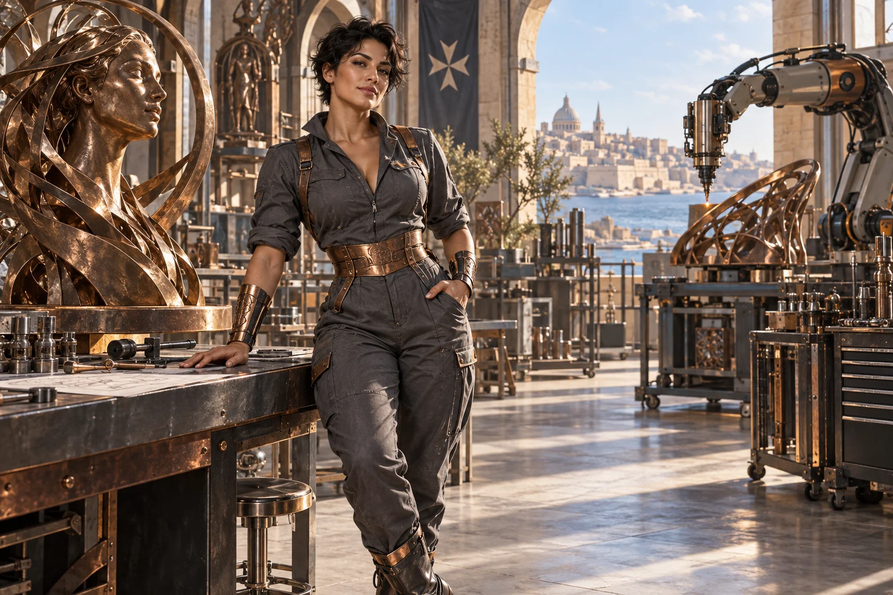

Write a build brief
Specify the intended function, operating conditions, interfaces and measurable requirements.

Follow the connections. Choose your direction.
Maltese-Australian. Maltese-Aussie welder’s daughter, now fab lab matriarch.
Her original domain: Advanced manufacturing, trades.
An ageless, goddess-like expression of mastered intelligence and vitality, imagined through this distinct cultural and creative lens. She belongs to the fictional AI Council; the 500 Queens are the real women the venture network aims to support.
Explore the original Council design →Forge turns a concept into a practical build question. She helps founders work with tradespeople, engineers and manufacturers to specify an object or process, produce a prototype and learn from what it actually does.
Direct, encouraging and hands-on. She respects good craft and asks to see the measurement.
Forge Queen · fictional AI mentor characterManufacturing, trades, prototypes and production planning.
Forge starts with a function rather than a fashionable material. What must the part do, in which conditions, for how long and at what cost? She helps a founder describe those requirements in a way a fabricator or laboratory can respond to. A failed prototype can be valuable when the test was well designed.
She also looks beyond the first object. Repair, tooling, supply, assembly, quality checks and the people doing the work determine whether a prototype can become an enterprise. Women belong throughout this process, including technical authority, workshop leadership, ownership and investment decisions.
Specify the intended function, operating conditions, interfaces and measurable requirements.
Choose the smallest build that can expose a critical uncertainty and record how the result will be judged.
Map materials, suppliers, assembly steps, inspection, maintenance and realistic labour.
A founder has a concept for a modular structure and needs to decide what to make first.
Choose one function that must work for the whole concept to succeed.
Describe loads, dimensions, interfaces and relevant operating conditions.
Ask suitable makers to review the brief and propose a limited prototype.
Measure the result, record failures and revise the next build.
A prototype specification, a test record and a revised production question.
Qualified engineers or tradespeople review safety-critical requirements and build methods.
A written preparation guide for your own use with a human mentor or AI assistant.
Ask what the women involved want and need from this environment or system. Bring the Queen's perspective to that conversation, with women from the relevant places, backgrounds and ways of living shaping the answers.
Explore the central equality question →These are proposed learning connections. Choose a brief, follow its evidence questions and bring the people affected into the work.
Explore compact city accommodation that makes short stays dignified, accessible and easy to run.
Engineering development
Turn fleet cleaning into a measurable service for workers, vehicles and water use.
Practical pilot
Help cold stores keep food traceable, accessible and moving through the right temperature conditions.
Practical pilot
Test the assumptions behind an island spaceport before proposing a site or construction programme.
Speculative concept
Examine whether an under-ocean fast-transport vision has a useful, testable starting point.
Speculative concept
Work backwards from a useful observation to the smallest satellite network that could provide it.
Research frontier
East Asian diaspora
Translate ambition into a relationship that works both ways.
Her name, original cultural archetype, domain and colour come from the original Queens Council design. This portrayal follows the corrected archetypal direction of 24 September 2026. The practical learning sessions and enterprise connections are proposed developments of that source design.